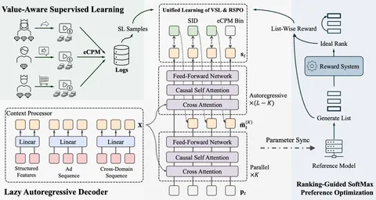

Сегодня разбираем статью, где авторы из Kuaishou расширяют парадигму OneRec на рекламный домен. Они выделяют три проблемы, которые в рекламных рекомендациях проявляются особенно остро по сравнению с обычными LLM.
1. Рекламу сложно токенизировать: одно объявление — это сразу видео, текст, продукт, бренд, рекламодатель и бизнес-метаданные.
2. Важно не просто генерировать рекомендации — важен порядок объявлений в выдаче и eCPM.
3. Всё это должно работать в проде с жёсткими ограничениями по latency.
Ответом становится GR4AD (Generative Recommendation for ADdvertising) — генеративная рекламная система, в которой для каждой из этих проблем есть отдельное решение.
Нововведения такие:
- UA-SID (unified advertisement semantic ID) — единый семантический идентификатор объявления. Объявление прогоняют через мультимодальную модель с instruction tuning для получения эмбеда с учётом прикладной семантики (контент, продукт, рекламодатель и так далее). Потом с помощью co-occurrence learning дообучают эмбеддинги под рекламный домен. Это нужно, чтобы модель лучше улавливала совместимость между рекламными сущностями. Далее полученные эмбеды с помощью MGMR RQ-KMeans квантуют в многоуровневые SID. Первые уровни ловят грубую семантику, следующие — уточняют остаточную информацию. Последний токен — хэш бизнес-ID для борьбы с коллизиями.
- LazyAR ускоряет декодер. Самый важный первый токен генерируется честно авторегрессивно, а часть промежуточных слоёв переиспользуется и считается не авторегрессивно. Для сохранения качества на выходы этих слоев навешивается дополнительный MTP-loss.
- VSL+RSPO — VSL добавляет в обучение бизнес-сигнал: модель предсказывает не только последовательность SID-токенов, но и дискретизированный eCPM. Добавляют перевзвешивание: более ценные пользователи и более важные действия получают больший вес. RSPO — RL-style компонента для list-wise-оптимизации. Вместо point-wise-обучения модель учат ранжировать список объявлений так, чтобы улучшать NDCG.
Ещё можно отметить оптимизации, например Dynamic Beam Serving, который подстраивает beam search под стадию генерации и текущую нагрузку. На ранних шагах beam шире. При высоком QPS — уже. Добавляются TTL-кэши, beam-cache, KV-cache, FP8.
Система построена как замкнутый цикл, в котором новые объявления переводятся в UA-SID и попадают в realtime index. При запросе модель генерирует и ранжирует кандидатов, после чего их показывают пользователю. Дальше система собирает reward-сигналы и отправляет их в онлайн-обучение, где обновляются VSL и RSPO. Так, модель постоянно дообучается на живом трафике.
Результаты у статьи впечатляющие. UA-SID сам по себе даёт ограниченный прирост к базовому генеративному ранкеру, основной буст происходит от способа обучения: VSL + RSPO заметно поднимают revenue относительно OneRec-V2. Сервисные оптимизации тоже ощутимые: LazyAR почти удваивает QPS без заметной просадки по качеству, а DBS помогает поймать баланс между скоростью и доходом. В A/B-тестах репортят увеличение рекламной выручки до 4,2% по сравнению с сильным бейзлайном на основе DLRM. Модель здорово масштабируется по качеству в зависимости от beam search width и количества параметров.
В целом работа выглядит как практичная попытка «приземлить» генеративные рекомендации в рекламу. Главная мысль статьи в том, что для использования LLM в рекламе, нужно учитывать специфику домена — например, свои SID, business-aware-лоссы и serving-оптимизации.
@RecSysChannel
Обзор подготовила
